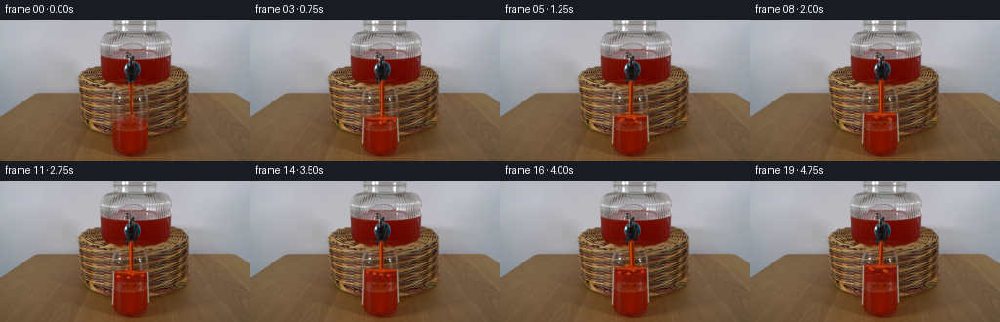
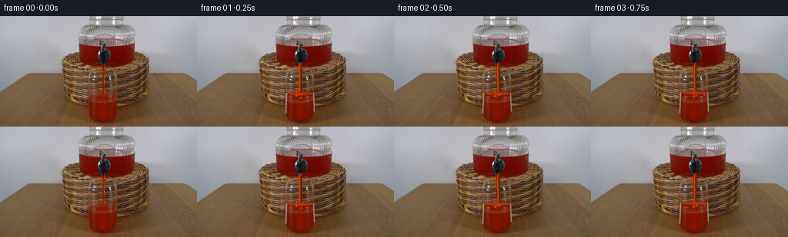
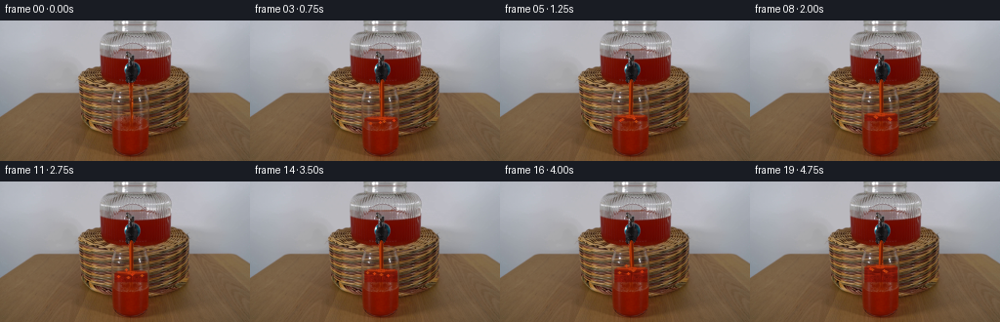
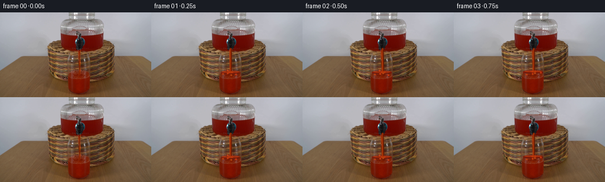
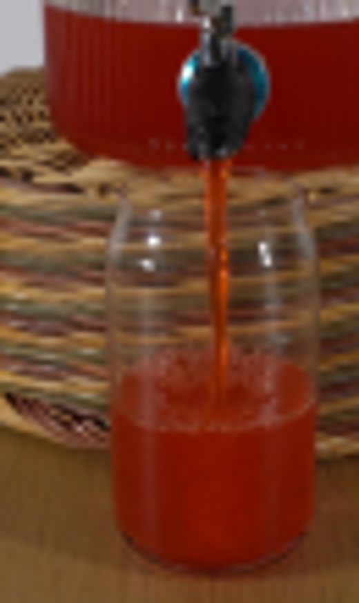
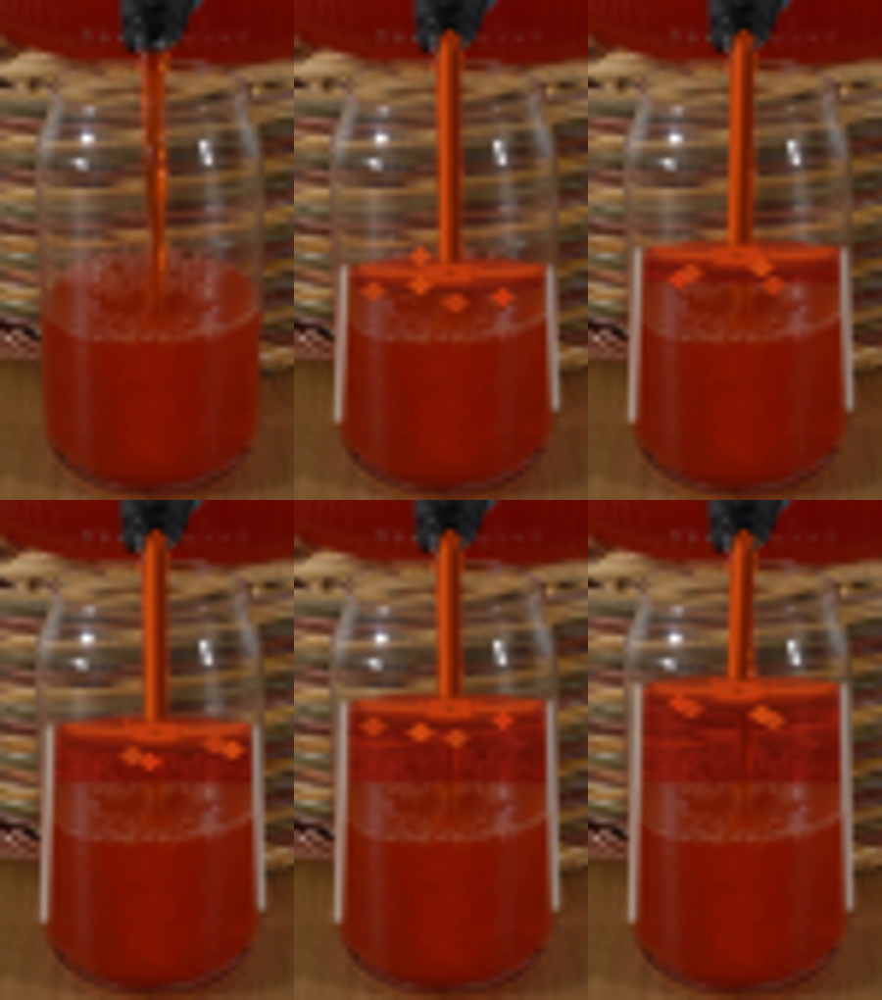

CODING AGENTS AS PIXEL WORLD MODELS
traex/GPT-5.6-Sol · 0065
点击播放 · 原生 RGB 像素
逐轮保存的候选
回放视频、检查图与代码变化。
每份候选均可单独播放。实际图片检查记录在下方工具轨迹中。
候选 01播放与检查图
点击播放 · 原生 RGB 像素


展开代码变化
--- 上一保存版本
+++ 本次保存版本
@@ -0,0 +1,126 @@
+"""Generate a short locked-off video of the dispenser filling the glass.
+
+The supplied photograph is used as the plate. The only synthesized pixels are
+the red liquid in the receiving glass, its moving surface, and the narrow jet.
+This keeps all of the rather intricate glass and wicker detail from the source.
+"""
+
+from pathlib import Path
+
+import cv2
+import numpy as np
+from PIL import Image
+
+import artifact_io
+
+
+ROOT = Path(__file__).resolve().parent
+N_FRAMES = 20
+
+
+def soft_glass_mask(level: float) -> np.ndarray:
+ """Antialiased mask for liquid below *level* inside the tumbler."""
+ h, w = 144, 256
+ yy, xx = np.mgrid[:h, :w].astype(np.float32)
+
+ # The glass is very slightly wider toward its middle and rounds into its
+ # heavy base. Staying a pixel inside the outline preserves the rim glints.
+ half = np.where(yy < 84, 14.3 + (yy - 75.0) * 0.34, 17.45)
+ half = np.where(yy > 129, 17.45 - (yy - 129.0) * 0.24, half)
+ cx = 133.7
+ side = np.clip(half - np.abs(xx - cx), 0.0, 1.0)
+ top = np.clip(yy - level + 0.55, 0.0, 1.0)
+ bottom = np.clip(136.1 - yy, 0.0, 1.0)
+ return side * top * bottom
+
+
+def add_liquid(frame: np.ndarray, plate: np.ndarray, level: float) -> None:
+ """Color the newly submerged part while retaining refracted plate detail."""
+ # Only the interval above the original liquid line is new. The old liquid
+ # is left pixel-identical apart from the animated meniscus and splash.
+ mask = soft_glass_mask(level)
+ yy = np.arange(144, dtype=np.float32)[:, None]
+ mask *= np.clip((103.4 - yy) / 1.5, 0.0, 1.0)
+
+ src = plate.astype(np.float32)
+ lum = 0.299 * src[..., 0] + 0.587 * src[..., 1] + 0.114 * src[..., 2]
+ hi = np.maximum(src.max(axis=2) - src.min(axis=2), 1.0)
+
+ # Opaque scarlet liquid, with luminance variation retained to suggest the
+ # wicker and glass refraction behind it. Neutral bright pixels are glass
+ # reflections and are deliberately protected.
+ target = np.empty_like(src)
+ target[..., 0] = np.clip(66.0 + 0.72 * lum, 0, 185)
+ target[..., 1] = np.clip(5.0 + 0.145 * lum, 0, 42)
+ target[..., 2] = np.clip(1.0 + 0.045 * lum, 0, 17)
+ reflection = np.clip((lum - 103.0) / 70.0, 0, 1) * np.clip((50.0 - hi) / 50.0, 0, 1)
+ alpha = 0.88 * mask * (1.0 - 0.58 * reflection)
+ frame[:] = np.clip(src * (1.0 - alpha[..., None]) + target * alpha[..., None], 0, 255).astype(np.uint8)
+
+
+def ellipse_overlay(frame: np.ndarray, center, axes, color, alpha: float, thickness=-1) -> None:
+ overlay = frame.copy()
+ cv2.ellipse(overlay, center, axes, 0, 0, 360, color, thickness, cv2.LINE_AA)
+ cv2.addWeighted(overlay, alpha, frame, 1.0 - alpha, 0, dst=frame)
+
+
+def draw_surface_and_jet(frame: np.ndarray, level: float, index: int) -> None:
+ """Draw the meniscus, steady stream, and small time-varying splashes."""
+ phase = index * 0.91
+ cy = int(round(level))
+ wave = int(round(np.sin(phase) * 0.55))
+
+ # Broad, gently elliptical liquid surface seen through the cylindrical cup.
+ ellipse_overlay(frame, (134, cy), (17, 2), (145, 35, 10), 0.72)
+ cv2.ellipse(frame, (134, cy - 1), (15, 1), 0, 8, 172, (193, 65, 17), 1, cv2.LINE_AA)
+ cv2.ellipse(frame, (134, cy + 1), (16, 2), 0, 6, 174, (105, 22, 7), 1, cv2.LINE_AA)
+
+ # A continuous narrow jet. Sub-pixel-looking changes in width and lateral
+ # position avoid a frozen painted stripe while preserving constant flow.
+ x = 134 + (1 if np.sin(phase * 0.67) > 0.82 else 0)
+ width = 2 if index % 4 else 3
+ cv2.line(frame, (x, 61), (x + wave, cy - 1), (137, 39, 5), width, cv2.LINE_AA)
+ cv2.line(frame, (x - 1, 62), (x + wave - 1, cy - 2), (205, 75, 14), 1, cv2.LINE_AA)
+ cv2.line(frame, (x + 1, 63), (x + wave + 1, cy - 2), (102, 25, 3), 1, cv2.LINE_AA)
+
+ # Impact dimple and a restrained crown/spray at the point of impact.
+ cv2.ellipse(frame, (x + wave, cy), (4, 1), 0, 0, 360, (194, 58, 12), 1, cv2.LINE_AA)
+ splash_h = 1 + (index % 3 == 1)
+ cv2.line(frame, (x - 4, cy), (x - 5, cy - splash_h), (184, 55, 15), 1, cv2.LINE_AA)
+ cv2.line(frame, (x + 4, cy), (x + 5, cy - 1), (178, 49, 11), 1, cv2.LINE_AA)
+ if index % 5 in (1, 2):
+ cv2.circle(frame, (x - 5, cy - 3), 1, (197, 72, 24), -1, cv2.LINE_AA)
+
+ # Tiny foam bubbles ride near the rising surface. Their positions are
+ # analytic/deterministic so regenerating the artifact gives identical data.
+ for j in range(7):
+ bx = int(round(120 + ((j * 7 + index * (1 + j % 2)) % 28)))
+ by = cy + 2 + ((j * 3 + index) % 4)
+ col = (183 + (j % 2) * 18, 54 + (j % 3) * 8, 16)
+ cv2.circle(frame, (bx, by), 1, col, -1, cv2.LINE_AA)
+
+ # Restore crisp glass-edge glints, which must remain in front of the fluid.
+ cv2.line(frame, (116, max(84, cy - 1)), (115, 126), (171, 151, 140), 1, cv2.LINE_AA)
+ cv2.line(frame, (151, max(85, cy - 1)), (152, 124), (155, 139, 131), 1, cv2.LINE_AA)
+
+
+def generate() -> np.ndarray:
+ plate = np.asarray(Image.open(ROOT / "first_frame.png").convert("RGB"), dtype=np.uint8)
+ frames = np.repeat(plate[None, ...], N_FRAMES, axis=0)
+
+ # Frame zero is intentionally untouched. At the observed flow rate the
+ # visible surface rises about sixteen pixels during the remaining 4.75 s.
+ for i in range(1, N_FRAMES):
+ p = i / (N_FRAMES - 1)
+ level = 102.2 - 15.2 * p
+ frame = plate.copy()
+ add_liquid(frame, plate, level)
+ draw_surface_and_jet(frame, level, i)
+ frames[i] = frame
+
+ return frames.astype(np.uint8)
+
+
+if __name__ == "__main__":
+ artifact_io.save(generate(), ROOT)
+
候选 02播放与检查图
点击播放 · 原生 RGB 像素


展开代码变化
--- 上一保存版本
+++ 本次保存版本
@@ -71,16 +71,16 @@
wave = int(round(np.sin(phase) * 0.55))
# Broad, gently elliptical liquid surface seen through the cylindrical cup.
- ellipse_overlay(frame, (134, cy), (17, 2), (145, 35, 10), 0.72)
- cv2.ellipse(frame, (134, cy - 1), (15, 1), 0, 8, 172, (193, 65, 17), 1, cv2.LINE_AA)
- cv2.ellipse(frame, (134, cy + 1), (16, 2), 0, 6, 174, (105, 22, 7), 1, cv2.LINE_AA)
+ ellipse_overlay(frame, (134, cy), (16, 2), (143, 34, 9), 0.50)
+ cv2.ellipse(frame, (134, cy - 1), (14, 1), 0, 10, 170, (183, 56, 13), 1, cv2.LINE_AA)
+ cv2.ellipse(frame, (134, cy + 1), (15, 2), 0, 8, 172, (105, 22, 7), 1, cv2.LINE_AA)
# A continuous narrow jet. Sub-pixel-looking changes in width and lateral
# position avoid a frozen painted stripe while preserving constant flow.
x = 134 + (1 if np.sin(phase * 0.67) > 0.82 else 0)
- width = 2 if index % 4 else 3
- cv2.line(frame, (x, 61), (x + wave, cy - 1), (137, 39, 5), width, cv2.LINE_AA)
- cv2.line(frame, (x - 1, 62), (x + wave - 1, cy - 2), (205, 75, 14), 1, cv2.LINE_AA)
+ width = 2
+ cv2.line(frame, (x, 61), (x + wave, cy - 1), (134, 37, 4), width, cv2.LINE_AA)
+ cv2.line(frame, (x - 1, 62), (x + wave - 1, cy - 2), (185, 61, 10), 1, cv2.LINE_AA)
cv2.line(frame, (x + 1, 63), (x + wave + 1, cy - 2), (102, 25, 3), 1, cv2.LINE_AA)
# Impact dimple and a restrained crown/spray at the point of impact.
@@ -93,16 +93,11 @@
# Tiny foam bubbles ride near the rising surface. Their positions are
# analytic/deterministic so regenerating the artifact gives identical data.
- for j in range(7):
+ for j in range(5):
bx = int(round(120 + ((j * 7 + index * (1 + j % 2)) % 28)))
by = cy + 2 + ((j * 3 + index) % 4)
col = (183 + (j % 2) * 18, 54 + (j % 3) * 8, 16)
cv2.circle(frame, (bx, by), 1, col, -1, cv2.LINE_AA)
-
- # Restore crisp glass-edge glints, which must remain in front of the fluid.
- cv2.line(frame, (116, max(84, cy - 1)), (115, 126), (171, 151, 140), 1, cv2.LINE_AA)
- cv2.line(frame, (151, max(85, cy - 1)), (152, 124), (155, 139, 131), 1, cv2.LINE_AA)
-
def generate() -> np.ndarray:
plate = np.asarray(Image.open(ROOT / "first_frame.png").convert("RGB"), dtype=np.uint8)
可观测工具轨迹
实际执行的命令与返回图片。
命令 1exit 0
/bin/bash -lc "cat prompt.txt && printf '\\n---RULES---\\n' && cat GENERATION_RULES.md"
命令 2exit 0
/bin/bash -lc "ls -la && find . -maxdepth 2 -type f -printf '%p %s bytes\\n' | sort"
命令 3exit 0
/bin/bash -lc "python3 - <<'PY'
from PIL import Image
im=Image.open('first_frame.png')
print(im.size,im.mode)
PY
which ffmpeg || true
ffmpeg -version 2>/dev/null | head -3
python3 - <<'PY'
mods=['cv2','numpy','PIL','imageio','scipy']
for m in mods:
try:
x=__import__(m); print(m,'ok',getattr(x,'__version__',''))
except Exception as e: print(m,'NO',e)
PY"命令 4exit 0
/bin/bash -lc 'cat artifact_io.py'
命令 5exit 0
/bin/bash -lc "python3 - <<'PY'
from PIL import Image
im=Image.open('first_frame.png')
im.crop((95,35,160,144)).resize((520,872)).save('.tmp/crop.png')
PY"命令 6exit 0
/bin/bash -lc "python3 - <<'PY'
from PIL import Image
import numpy as np
im=np.array(Image.open('first_frame.png'))
for y in [75,80,85,90,95,100,103,106,110,120,130,136]:
print(y, [(x, im[y,x].tolist()) for x in [115,118,122,127,130,132,134,138,144,149,152]])
PY"命令 7exit 2
/bin/bash -lc "python3 generate.py && python3 - <<'PY'
from PIL import Image
import numpy as np
im=np.array(Image.open('first_frame.png'))
f0=np.array(Image.open('frames/00.png'))
print('f0 equal',np.array_equal(im,f0),'maxdiff',np.abs(im.astype(int)-f0).max())
z=np.load('pixels.npz')['pixels']; print(z.shape,z.dtype)
PY
ffmpeg -y -framerate 4 -i frames/%02d.png -c:v libx264 -pix_fmt yuv420p .tmp/preview.mp4 >/dev/null 2>&1
ls -lh pixels.npz inspection.png transition_check.png index.html .tmp/preview.mp4"命令 8exit 0
/bin/bash -lc "python3 - <<'PY'
from PIL import Image
for i in [0,1,5,10,15,19]:
im=Image.open(f'frames/{i:02d}.png').crop((108,55,158,140)).resize((300,510))
im.save(f'.tmp/crop{i:02d}.png')
# montage
out=Image.new('RGB',(900,1020))
for k,i in enumerate([0,1,5,10,15,19]): out.paste(Image.open(f'.tmp/crop{i:02d}.png'),((k%3)*300,(k//3)*510))
out.save('.tmp/crops.png')
PY"命令 9exit 0
/bin/bash -lc "python3 generate.py && python3 - <<'PY'
from PIL import Image
import numpy as np
assert np.array_equal(np.asarray(Image.open('first_frame.png')),np.asarray(Image.open('frames/00.png')))
frames=[np.asarray(Image.open(f'frames/{i:02d}.png')) for i in range(20)]
a=np.stack(frames)
assert a.shape==(20,144,256,3) and a.dtype==np.uint8
print('validated',a.shape,a.dtype,'first exact; changed pixels last',np.count_nonzero(np.any(a[-1]"'!=a[0],2)))
PY
python3 -m py_compile generate.py
find frames -type f | wc -l
ls -lh pixels.npz inspection.png transition_check.png index.html generate.py'视觉工具实际返回图片 1

视觉工具实际返回图片 2

视觉工具实际返回图片 3

视觉工具实际返回图片 4

视觉工具实际返回图片 5

保存候选 2 份；完成命令 9 次；可验证图片返回 5 张。原始 API 响应与完整日志保留在本地。